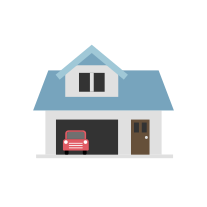

<mat-sidenav-container class="sidenav-container">
  <mat-sidenav #drawer class="sidenav" fixedInViewport
      [attr.role]="(isHandset$ | async) ? 'dialog' : 'navigation'"
      [mode]="(isHandset$ | async) ? 'over' : 'over'"
      >
      <span 
      (click)="drawer.toggle()"
      class="material-icons">
        close
        </span>
    <mat-nav-list>
      <a mat-list-item href="#" routerLink="/about"><span class="material-icons menu-icons">
        account_circle
        </span>About Me</a>
      <a mat-list-item href="#" routerLink="/projects"><span class="material-icons menu-icons">
        grid_view
        </span>Projects</a>
      <a mat-list-item href="#" routerLink="/contact"><span class="material-icons menu-icons">
        call
        </span>Contact</a>
    </mat-nav-list>
  </mat-sidenav>
  <mat-sidenav-content>
    <mat-toolbar class="navigation">
      <button
        type="button"
        aria-label="Toggle sidenav"
        mat-icon-button
        (click)="drawer.toggle()"
        *ngIf="isHandset$ | async">
        <mat-icon aria-label="Side nav toggle icon">menu</mat-icon>
      </button>
      <div class="left">
        
        <p 
        routerLink="/home"
        class="home">Home</p>
      </div>
      <div class="middle"></div>

      <div class="right">
        <ul class="right-list">
          <li><a
            routerLink="/about"
            href="#">About Me</a></li>
          <li><a  
            routerLink="/projects"
            href="#">Projects</a></li>
          <li><a  
            routerLink="/contact"
            href="#">Contact</a></li>
        </ul>
      </div>

    </mat-toolbar>
    <ng-content>

    </ng-content>
  </mat-sidenav-content>
</mat-sidenav-container>
